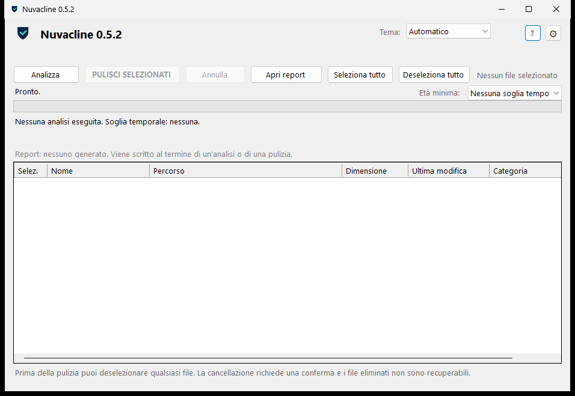

Nuvacline
A small, portable Windows utility that finds and removes the temporary files of the current user.
Early access (alpha) - version 0.5.2
Features
-
Read-only analysis
Scans the temporary folder of the current Windows user and lists what it finds. The analysis itself does not modify anything on disk.
-
You choose what is deleted
Items must be selected manually and cleaning always asks for confirmation. Recent files (last 24 hours) and files that are in use are skipped.
-
Clear overview
Every item is shown with name, full path, size, last modified date and category before you decide.
-
Local report
After an analysis or a cleaning, a report is written to
%LOCALAPPDATA%\Nuvacline\reports\and stays on your PC. -
Portable
Distributed as a ZIP with a single executable. No installation, no background service, no administrator rights required.
-
Light and dark theme
The interface follows the Windows theme automatically or can be set manually to light or dark.
Privacy
- Nuvacline does not use the network: no telemetry, no analytics, no ads, no account.
- It works entirely offline; reports are stored only on your PC in
%LOCALAPPDATA%\Nuvacline\. - These behaviour are verified by the project's own privacy and security tests included in the automated test suite.
Screenshot

Latest release
Version 0.5.2 - October 17, 2026 - early access (alpha)
What's new in 0.5.2
- More reliable clipboard copy: if Windows temporarily keeps the clipboard busy, the copy is retried automatically.
- Version metadata aligned to 0.5.2 across the application and package.
Requirements
- Windows 10 (build 1903 or later) or Windows 11, 64-bit.
- .NET Framework 4.8 or later (normally already present on supported Windows versions).
- No administrator rights, no network connection.
FAQ
How do I install Nuvacline?
Download the ZIP, extract it into any folder and run Nuvacline.exe. There is no installer and nothing is written outside the folder and %LOCALAPPDATA%\Nuvacline\.
How do I uninstall it?
Close the application and delete the folder where you extracted it. If you also want to remove the saved reports, delete %LOCALAPPDATA%\Nuvacline\.
Which files does it clean?
Only temporary files of the current Windows user: the folder returned by the system as the user's temporary directory. It does not clean other accounts or system folders, and it offers no way to add custom paths.
Does the analysis change anything?
No. The analysis is read-only. Files are only deleted after you select them and confirm the cleaning.
Are deleted files recoverable?
No. Deleted files do not go to the Recycle Bin. The cleaning asks for confirmation first; uncheck anything you want to keep before starting.
Does it need internet or administrator rights?
No. Nuvacline works fully offline and runs as a normal user.
Disclaimer
Nuvacline is provided "as is", without warranty of any kind. The author is not liable for any data loss, Windows problems, or other damage resulting from the use of this software. Use it at your own risk.
Source code and license
Nuvacline is distributed under the GNU General Public License v3.0. The full license text is included in the download and is also available here.
The source repository is currently private; the application is distributed as a portable package.
Contact
Feedback and questions: github.com/DJ-Erik. There is no public issue tracker at the moment.